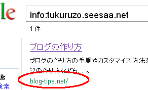

オールドドメインでのSEO対策
独自ドメインを取得してブログを作成する場合、新規に取得する場合はドメイン年齢や被リンクなど、まったくのゼロからのスタートになります。
けれども、中古ドメインを利用すると、それまでの経歴を引き継ぎながら作り始めることができます。
中古ドメインというのは、所有者が更新しなかったドメインを再取得するものですが、それらのなかでも1990年代後半から取得されていたものは、オールドドメインと呼ばれています。
オールドドメインはブログで更新するのに最適
期限切れを迎えるドメインは毎日数十万単位で放出されていますが、そのなかの99%以上はSEO的にまったく効果のないものばかりです。
ページランクも付いてなければ、被リンクもゼロ、取得年代も２，３年前の新しいものがほとんどです。
けれども、なかには1990年代の後半からずっと運営されており、その日に期限を向かえる古い年代のドメインもほんのわずかに存在します。
そのようなドメインは、削除猶予期間中（pending deleteの状態）にページランクなどはほぼ消えてしまいます。
けれども、放出された期限切れ直後に取得すれば、数週間程度で元のページランクで復活する可能性が高いです。
ただ、そのようなドメインは非常に人気が高く、放出された直後に業者が押さえてしまうのが一般的です。
そのようなわけで、ある程度妥協して、被リンクは少ないが年代が古いもの、あるいはオーソリティーサイトからの被リンクがあるものなど、比較的取得しやすい中古ドメインを取得し、自力で育てていくことをおすすめします。
幸い、ページランクがリセットされたとしても、年代の古いドメインの場合はインデックスされやすい傾向があります。
ページボリュームが多くなるブログの更新には最適なのです。
オールドドメインの調べ方
オールドドメインの探し方の前に、どのくらいオールドなのかを調べる方法からご紹介します。
ドメイン年齢の調査方法
まず、ドメインが取得されていた年代を調べる必要があります。
Internet Archiveでドメイン名を入れるとわかりますが、wwwあり・なしの両方で調べてみましょう。
1996年以前の年代はわかりませんが、たいていはそれ以降のドメインであることが多いです。
また、インデックスされているページのcopylightの部分に正確な年代が書かれているケースも多いです。
次に、実際にそれぞれの年代のページをクリックして、どのようにサイトが運営されていたのかもチェックします。
ブランクなく継続して運営がされており、ウェブアーカイブ内でのインデックス数の多い方がベターです。
＊が多いドメインは当時の更新頻度が高かったことを意味してますので、その辺りもチェックしておきます。
もし、クリックした年代で、ドメイン名とまったく関係がないサイトが表示されていたら、リダイレクトで利用されていたことになるので注意が必要です。
301リダイレクトを利用すると、リダイレクト先に移転したという意味になるので、そのようなドメインを取得しても、リダイレクト設定を解除しないかぎりは検索ではヒットしません。
リダイレクト設定の調べ方
このリダイレクト設定されているかどうかを調べるには、グーグル検索でinfo:ドメイン名を入力するのが一番確実です。
例えば、当ブログの引越し前のドメインは tukuruzo.seesaa.net でしたが、現在は独自ドメイン化してますので当ドメインへリダイレクト設定しています。
グーグルでその旧ドメインを調べてみると、現在の当サイトの情報が表示されています。

このように、違うドメインのURL情報が表示されていたら、リダイレクト設定がなされているという意味になります。
このチェックを必ずしておく必要があるのは、リダイレクト設定がされているドメインは、リダイレクト先のページランクが表示されてしまうからです。
本来はゼロだったとしても、ページランク10のサイトにリダイレクト設定をすれば、ツールバー上は10が表示されます。
これを悪用し、クローラーが来たときだけリダイレクトして、意図的に高いページランクにみせかけるものも多いです。
ページランクが高いからといって、オークションなどで高額な料金で購入してしまうことのないよう、事前に確認しておきましょう。
被リンク数の調べ方
次に、ヤフーで被リンクの状況を確認しておきます。
（追記：日本のヤフーはgoogleに切り替わりましたので、海外のyahoo.comで調べることをおすすめします。）
なぜヤフーなのかというと、グーグルで被リンクを調べても限定された情報しか公開されないからです。
link:ドメイン名、もしくはlinkdomain:ドメイン名で検索してください。
前者はそのページのみ、後者はサブドメインも含めたドメイン全体への被リンクを調べることができます。
被リンク元に、ヤフカテのdir.yahooやdmozの文字、オーソリティーサイトのgovやedu、あるいは古い年代のページであることの多い.htmなどの文字列があれば、被リンク数は少なくてもある程度のSEO効果が期待できます。
また、下層ページからではなく、ドメインのトップページからの被リンクが多いものが有効です。
被リンク数が数十程度で人気のない場合でも、リンク元のクオリティーによってはＰＲ４ぐらいで復活することも多いです。
ここで避けた方がよいのは、右上に1,000件とか表示されていても、同一サイトからの被リンクばかりで偏っていているものです。
実際は数十件程度の被リンクしかカウントされていないので避けた方がよいでしょう。
数千件以上の被リンクがあるものは、コメントスパムや重複リンクのケースが多いですので、そのあたりもチェックしましょう。
取得したドメインで実際にブログを作成する際は、リンクされているURLと同じ形で新サイトを公開するのがベターです。
例えば、wwwありで運営されていたら、これから作成するブログもwwwありで、htmlではなく、.htmで作っていたなら、.htmで作るようにします。
被リンクの多いページについては、できるだけそのままのurlを再現するようにしましょう。
このようにして、ＰＲ３～５ぐらいのページランク付きのドメインを数十個用意して特定のドメインに一方的にリンクした場合、比較的高いSEO効果が見込まれます。
- 独自ドメインをシーサーブログで使用
シーサーブログは独自ドメイン対応の無料ブログサービスです。 長期的にブログを運営する場合は、できるだけ最初に独自ドメインを取得しておくことをおすすめします。費用は .com や .net で年間1000円程度、jp ドメインの場合は3500円程度です。...